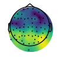
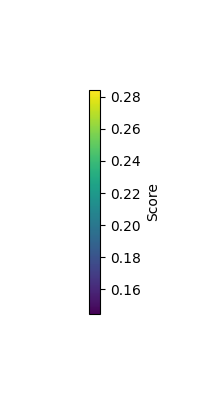
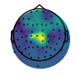

Note
Go to the end to download the full example code
Using NeuroDSP with MNE¶
This example explores using NeuroDSP in combination with MNE.
NeuroDSP is designed to offer a selection of methods and analyses that can be applied to neural time series. NeuroDSP itself does not offer functionality for managing multi-channel data and metadata. To do so, NeuroDSP can be used with other tools, such as MNE.
Here, we explore an example of how analyses from NeuroDSP can be applied to data that is managed and processed by MNE. In particular, it explores applying some methods for finding rhythmic properties in an example electroencephalography (EEG) dataset, including calculating power spectra, running burst detection, and applying lagged coherence.
This tutorial requires that you have MNE installed. If you don’t already have MNE, you can follow instructions to get it here.
# General imports
import numpy as np
import matplotlib.pyplot as plt
from matplotlib import cm, colors
# Import MNE, as well as the MNE sample dataset
import mne
from mne import io
from mne.datasets import sample
from mne.viz import plot_topomap
# Import some NeuroDSP functions to use with MNE
from neurodsp.spectral import compute_spectrum, trim_spectrum
from neurodsp.burst import detect_bursts_dual_threshold
from neurodsp.rhythm import compute_lagged_coherence
# Import NeuroDSP plotting functions
from neurodsp.plts import (plot_time_series, plot_power_spectra,
plot_bursts, plot_lagged_coherence)
Load & Check MNE Data¶
First, we will load the example dataset from MNE, and have a quick look at the data.
The MNE sample dataset is a combined MEG/EEG recording with an audiovisual task, as described here.
For the current example, we are going to select only the EEG data, and analyze it as continuous (non-epoched) data.
Note that if you don’t already have the data, the sample.data_path method
will download the MNE sample dataset.
# Get the data path for the MNE example data
sample_data = sample.data_path()
raw_fname = str(sample_data) + '/MEG/sample/sample_audvis_filt-0-40_raw.fif'
# Load the file of example MNE data
raw = io.read_raw_fif(raw_fname, preload=True, verbose=False)
# Select EEG channels from the dataset
raw = raw.pick_types(meg=False, eeg=True, eog=False, exclude='bads')
# Grab the sampling rate from the data
fs = raw.info['sfreq']
NOTE: pick_types() is a legacy function. New code should use inst.pick(...).
Removing projector <Projection | PCA-v1, active : False, n_channels : 102>
Removing projector <Projection | PCA-v2, active : False, n_channels : 102>
Removing projector <Projection | PCA-v3, active : False, n_channels : 102>
# Settings for exploring an example channel of data
ch_label = 'EEG 058'
t_start = 20000
t_stop = int(t_start + (10 * fs))
# Extract an example channel to explore
sig, times = raw.get_data(mne.pick_channels(raw.ch_names, [ch_label]),
start=t_start, stop=t_stop, return_times=True)
sig = np.squeeze(sig)
# Plot a segment of the extracted time series data
plot_time_series(times, sig)
Calculate Power Spectra¶
Next lets check the data in the frequency domain, calculating a power spectrum with the median Welch’s procedure from NeuroDSP.
# Calculate the power spectrum, using median Welch's & extract a frequency range of interest
freqs, powers = compute_spectrum(sig, fs, method='welch', avg_type='median')
freqs, powers = trim_spectrum(freqs, powers, [3, 30])
# Check where the peak power is
peak_cf = freqs[np.argmax(powers)]
print(peak_cf)
8.008199869791666
# Plot the power spectra, and note the peak power
plot_power_spectra(freqs, powers)
plt.plot(freqs[np.argmax(powers)], np.max(powers), '.r', ms=12)
[<matplotlib.lines.Line2D object at 0x7fa0491b2ee0>]
Look for Bursts¶
Now that we have a sense of the main rhythmicity of this piece of data, lets explore using NeuroDSP to investigate whether this rhythm is bursty.
# Burst settings
amp_dual_thresh = (1., 1.5)
f_range = (peak_cf-2, peak_cf+2)
# Detect bursts of high amplitude oscillations in the extracted signal
bursting = detect_bursts_dual_threshold(sig, fs, amp_dual_thresh, f_range)
# Plot original signal and burst activity
plot_bursts(times, sig, bursting, labels=['Raw Data', 'Detected Bursts'])
Measure Rhythmicity with Lagged Coherence¶
So far, in an example channel of data, we have explored some rhythmic properties of the EEG data. We did so by finding the main frequency of rhythmic power, and checking this frequency for bursting.
Next, we can try applying similar analyses across all channels, to measure rhythmic properties across the whole dataset.
To do so, let’s use the lagged coherence measure. Using lagged coherence, we can measure, per channel, the frequency which displays the most rhythmic activity, as well as the score of how rhythmic this frequency is. We can do so per location, to map rhythmic activity topographically across a range of frequencies.
# Settings for lagged coherence, as frequency range (start, stop, step)
f_range = (5, 25, 0.25)
# Calculate lagged coherence on our example channel data
lcs, freqs = compute_lagged_coherence(sig, fs, f_range, return_spectrum=True)
# Visualize lagged coherence across all frequencies
plot_lagged_coherence(freqs, lcs)
# Get the most rhythmic frequency and the associated lagged coherence score
max_freq = freqs[np.argmax(lcs)]
max_score = np.max(lcs)
print('The frequency with the greatest rhythmicity is {:1.1f} Hz '\
'with a lagged coherence score of {:1.2f}.'.format(max_freq, max_score))
The frequency with the greatest rhythmicity is 9.2 Hz with a lagged coherence score of 0.68.
# Set a 30 second window of data to analyze
t_start = 10000
t_stop = int(t_start + (60 * fs))
# Initialize output variables
max_freq = np.zeros(len(raw.ch_names))
max_score = np.zeros(len(raw.ch_names))
# Loop lagged coherence across each channel
for ind, ch_label in enumerate(raw.ch_names):
# Extract current channel data
cur_sig = np.squeeze(raw.get_data(mne.pick_channels(raw.ch_names, [ch_label]),
start=t_start, stop=t_stop))
# Calculate lagged coherence on current channel data
cur_lcs, cur_freqs = compute_lagged_coherence(cur_sig, fs, f_range, return_spectrum=True)
# Collect data of interest: frequency of max rhythmicity & associated rhythmicity value
max_freq[ind] = cur_freqs[np.argmax(cur_lcs)]
max_score[ind] = np.max(cur_lcs)
Plot Rhythmicity Across the Scalp¶
Now that we have calculated the lagged coherence across the scalp, we can use some MNE plotting utilities to plot these values across the scalp. To do so, we will use the EEG montage definition of the sample dataset.
In the plots below we can see, from the plot of the lagged coherence values, that the posterior electrodes display more rhythmic properties than the frontal ones.
In the next plot, of the peak frequencies, we can see that these posterior regions are rhythmic in the alpha range, as well as there being a central cluster of beta rhythms.
# Plot locations with highest lagged coherence rhythmicity score
vlim = [np.min(max_score), np.max(max_score)]
plot_topomap(max_score, raw.info, cmap=cm.viridis, vlim=vlim, contours=0)
# Add colorbar
plt.figure(figsize=[2, 4])
sm = cm.ScalarMappable(cmap='viridis', norm=colors.Normalize(vmin=vlim[0], vmax=vlim[1]))
sm.set_array(np.linspace(*vlim))
cbar = plt.colorbar(sm, orientation='vertical', label='Score')
plt.gca().set_visible(False); plt.gcf().subplots_adjust(right=0.5)
- 
- 
# Plot frequency with most dominant rhythmicity
vlim = [np.min(max_freq) - 2, np.max(max_freq) + 2]
plot_topomap(max_freq, raw.info, cmap=cm.viridis, vlim=vlim, contours=0)
# Add colorbar
plt.figure(figsize=[2, 4])
sm = cm.ScalarMappable(cmap='viridis', norm=colors.Normalize(vmin=vlim[0], vmax=vlim[1]))
sm.set_array(np.linspace(*vlim))
cbar = plt.colorbar(sm, orientation='vertical', label='Frequency')
plt.gca().set_visible(False); plt.gcf().subplots_adjust(right=0.5)
- 
Further Analyses with MNE¶
That concludes the current example of using NeuroDSP in conjunction with MNE.
In this example, we applied NeuroDSP functions to continuous segments of EEG data.
Using a similar approach, you can also apply these and other analyses to epoched data, by managing and pre-processing data in MNE, selecting the data of interest, and then applying NeuroDSP functions to the data.
Total running time of the script: ( 0 minutes 11.918 seconds)